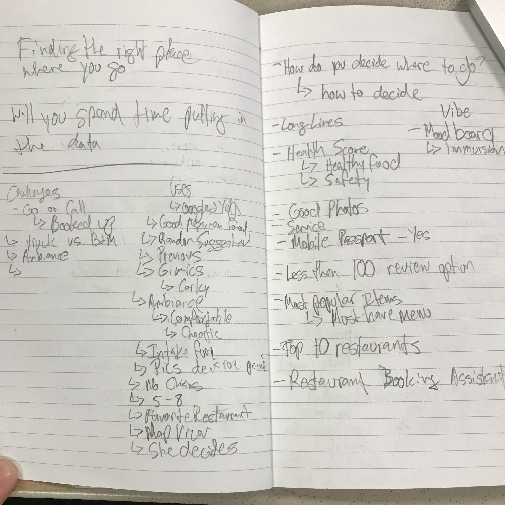
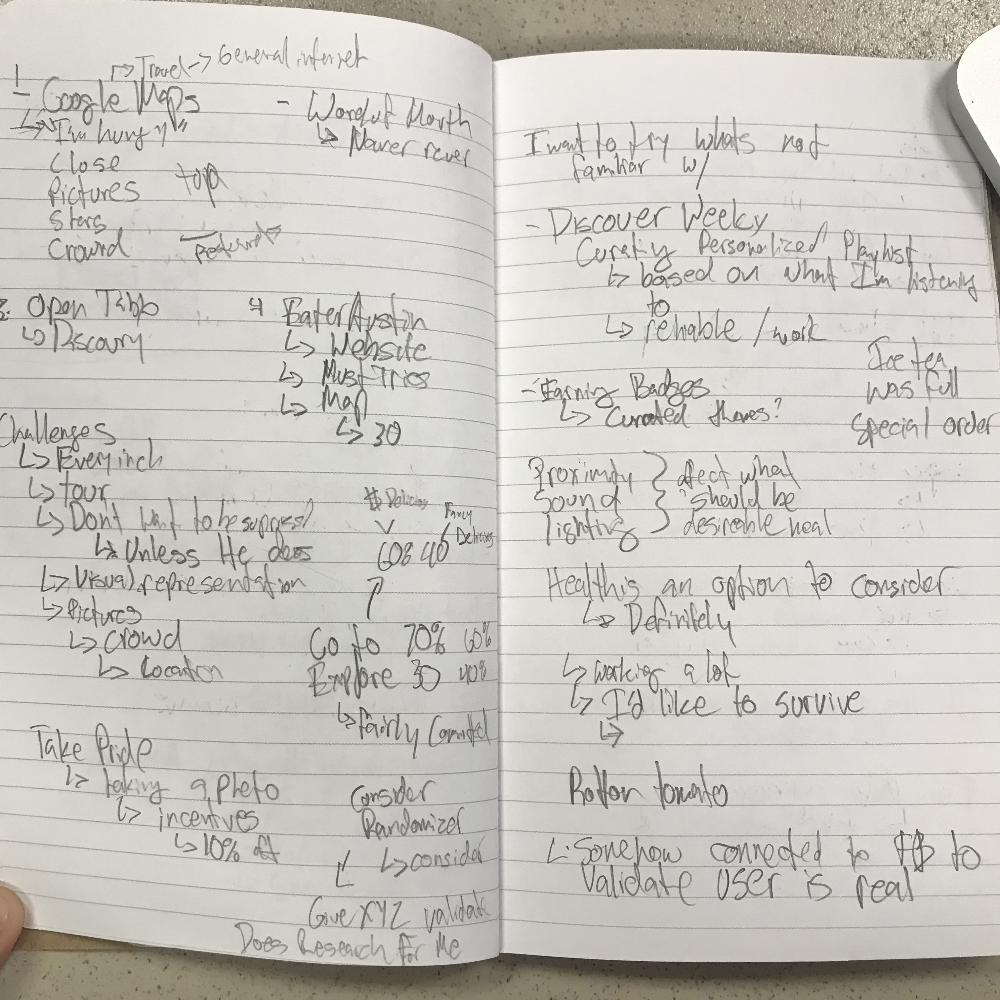

FOOD VIBE restaurant application
Built from scratch application which helps people find the best place to eat
based on the vibe of the place visualized by moodboards.
based on the vibe of the place visualized by moodboards.
1. PREPARATION AND SCOPE
Type of the project: Group project
Role: UX Designer performing the following tasks:
✓interviews ✓persona ✓user journey map ✓user flow wireframing ✓prototyping ✓user testing
Role: UX Designer performing the following tasks:
✓interviews ✓persona ✓user journey map ✓user flow wireframing ✓prototyping ✓user testing
Tools: Sketch
Adobe Illustrator
Adobe Photoshop
InVision
Adobe Illustrator
Adobe Photoshop
InVision
2. RESEARCH
Initial interviews


During our initial interviews we were able to find following insights:
Interviews (5 ppl) + Focus Groups (2 groups)
After food and service, VIBE (ambiance) is the most important part of the dining experience.
When describing VIBE, our interviewees were thinking of: inter decor, lightning, sound, noise, cleanliness, crowd,
layout, food presentation and taste.
People would like to know in advance the DETAILS of the place e.g.- what’s the waiting time or if this place is suitable
for a business meeting.
✓ Better quality images - We eat with our eyes
✓ Visual representation of the place
✓ Easily reachable menu
✓ More accurate filters (-> hashtags)
✓ Helpful feedback rather than random suggestions
Surveys (72 respondents)
Almost 90% of the respondents will be potentially interested in using the app with mood boards of the restaurants.
Almost three-quarters of the respondents will be somewhat interested in creating mood boards themselves.
Only 20% of the people who filled our survey have never been disappointed with a restaurant choice based upon Yelp.
Three quarters of the group consider photos as the most helpful feature when choosing a place to eat/drink.
Almost 100% of the respondents check the menu before going to the restaurant ( always or sometimes).
3. INFORMATION SYNTHESIS
Problem Statement
Summary of the insights
26-35 yo Foodies & Decision-Makers
Primary Goals:
Look at the Menu
Look at Visuals
Provide Feedback
Look at the Menu
Look at Visuals
Provide Feedback
Secondary Goals:
Get Directions
Book a Table
Video Room Tour
Get Directions
Book a Table
Video Room Tour
User Prefers:
-Visuals not summaries
-Recommendations not random
-Provide feedback not reviews
-Visuals not summaries
-Recommendations not random
-Provide feedback not reviews
User Persona

User Journey Map
4. CONCEPTS GENERATION
Whitebording -> drafts of: wireframes, user flow, informtion architecture
Wireframe and first version of prototype


Style Guide

User Scenario

User Flow

5. INTERACTION VISUALIZATION
After running a few interviews, gathering insights from surveys and creating many drafts on whiteboards, it was the highest time for creating paper prototypes.
We decided to prepare paper versions of low fidelity prototypes, to make them more accessible for users during user testing and to be able to quickly take
notes on the paper screens.
Low fidelity paper prototypes


6. IDEATION
Hi fidelity prototype


7. TESTING
Usability testing

MAJOR REVISIONS:
- Surveys/Reviews
- Login Process
- Randomizer
- Hashtag Functionality
- Rating System
- Prioritized Goals
- Badging System
- Incentive Program
- Surveys/Reviews
- Login Process
- Randomizer
- Hashtag Functionality
- Rating System
- Prioritized Goals
- Badging System
- Incentive Program
8. REFINING AND REPEATING
Conclusions
The FOOD VIBE app helps achieving User Goals by providing Users with:
✓suggestions about places with unique vibe
✓details and visual representation of the restaurant
✓easily reachable menu
✓more accurate filters - hashtags
✓helpful feedback
✓suggestions about places with unique vibe
✓details and visual representation of the restaurant
✓easily reachable menu
✓more accurate filters - hashtags
✓helpful feedback